Foundations of Deep Learning Pipelines and Architectures
From Linear Models to Modern Sequence Models: A Comparative Study for Image Classification.
M1 Draft scope: the data pipeline, training/validation loop, Linear classifier, MLP, and optional CNN are implemented and evaluated. The recurrent and Transformer experiments are reserved for the M2 Final milestone.
Assignment Information
Group Members & Work Assignment
| # | Full Name | Student ID | Role | GitHub |
|---|---|---|---|---|
| 1 | Hoang Kim Cuong | 2352145 | Linear / Softmax · MLP · CNN | @DiamondHoang |
| 2 | Phan Tan Loc | 2352712 | LSTM / GRU · Transformer | @cspaull |
| 3 | Tran Manh Thang | 2353124 | DataLoader & EDA · Train / Validate pipeline | @Winuim12 |
Problem Statement
Students implement an end-to-end deep learning pipeline for a controlled-scale image classification problem, then build and compare multiple architecture families under a shared data split and evaluation protocol.
Scope: Exploratory data analysis (EDA); train/validation/test splitting; Dataset and DataLoader design; preprocessing and augmentation; training/validation/test pipelines in PyTorch; implementation and comparison of architecture families; evaluation, error analysis, and a reproducible report.
Real-World Motivation
Online fashion retailers receive thousands of new product photographs every day and must assign each one to a catalogue category before it can be searched, filtered, or recommended. Manual tagging does not scale and is inconsistent between annotators, so the categorisation step is normally automated. Fashion-MNIST is a controlled-scale proxy for exactly that step: the images are real Zalando article photographs reduced to a size that lets five architecture families be trained and compared honestly on a single GPU or even on CPU, which is the point of this assignment.
Task Formulation
The task is single-label, multiclass image classification. The prediction unit is one image: each 28 × 28 grayscale image receives exactly one of 10 category labels, and no image carries more than one garment.
Model z = fθ(x) ∈ ℝ10 (raw logits, no softmax applied)
Output ŷ = argmaxc zc, c ∈ {0, …, 9}
Loss L(θ) = −(1/N) Σi log softmax(z(i))y(i)
Softmax is applied inside nn.CrossEntropyLoss, so every model in this project
returns raw logits and no model applies softmax in its forward method. Only
the parameters θ differ between the five families; the input tensor, the loss, the data
split, and the evaluation protocol are identical.
Research Question
Under an identical data split, preprocessing pipeline, loss function, and evaluation protocol, how do the five architecture families differ, and how much of the difference is explained by the inductive bias of their input representation rather than by parameter count alone? Accuracy by itself cannot answer this, so every model is also compared on Macro-F1, parameter count, training time, inference time, confusion structure, and qualitative prediction examples.
Learning Objectives
- Construct a complete PyTorch training pipeline for image classification, including Dataset, DataLoader, preprocessing, augmentation, optimization, and evaluation.
- Implement and explain linear/softmax, MLP, CNN, LSTM/GRU, and Transformer models for the same classification task.
- Compare models using multiple quantitative metrics and qualitative evidence, not accuracy alone.
- Analyze inductive bias and data representation choices (flattened pixels, spatial features, row/column/patch sequences).
- Produce reproducible code, reports, GitHub Pages materials, and a presentation video that satisfy the course deliverable standard.
Main Difficulties
- Low resolution. At 28 × 28 in grayscale there is no colour and almost no texture, so a model can only use silhouette, edges, and coarse spatial structure.
- Visually overlapping classes. T-shirt/top, pullover, coat, and shirt share nearly the same outline; the EDA samples below show that these four are the expected source of most confusion, while trousers, bags, and footwear are easy.
- Fair comparison is harder than high accuracy. Five different architectures must be trained under one split, one seed, one preprocessing pipeline, and one checkpoint-selection rule, otherwise the comparison measures the protocol instead of the architectures.
- Representation mismatch. Recurrent and Transformer models were designed for sequences, so an image must be reinterpreted as rows, columns, or patches. That conversion discards or reorders the 2-D neighbourhood a CNN gets for free, and the Transformer additionally has no notion of position until one is added explicitly.
- Leakage risk. Normalization statistics and checkpoint selection must both come from training/validation data only; using the test set for either would silently inflate the final numbers.
- Budget. Training time and inference time are reported metrics, not just practical constraints, so a model that wins on accuracy may still lose on the accuracy–speed–parameter trade-off.
Dataset Usage Declaration
All main results reported on this page are produced on Fashion-MNIST. MNIST was not used, and CIFAR-10 was not evaluated as an optional extension. Every model in the main comparison uses the same train/validation/test partitions and the same random seed (42), as required by the assignment's fairness constraints.
Dataset Description & EDA
Dataset Requirements:
- MNIST may be used for development and debugging only.
- Primary results must be reported on Fashion-MNIST.
- CIFAR-10 may be used as an optional extension.
- All models in the main comparison must use the same data split (same train/validation/test partitions and the same random seed).
1. Dataset Description
Fashion-MNIST is an image-classification dataset created by
Zalando Research as a more challenging drop-in replacement for the original
MNIST dataset. This project uses the copy distributed through
torchvision.datasets.FashionMNIST; the dataset has no semantic
version number.
Classes: 0 T-shirt/top · 1 Trouser · 2 Pullover · 3 Dress · 4 Coat · 5 Sandal · 6 Shirt · 7 Sneaker · 8 Bag · 9 Ankle boot
Source: Zalando Research Fashion-MNIST · Paper: Xiao et al., 2017
Collection & Labeling
The images originate from Zalando fashion articles. The official documentation provides the class labels and dataset structure, but does not give enough detail to independently evaluate the complete human-labeling procedure. Labeling consistency must therefore be treated as a possible limitation.
Biases & Limitations
- Only ten broad clothing categories are covered.
- Images are grayscale at 28 × 28, so color, texture, and fine visual detail are unavailable.
- The data represents Zalando fashion articles and may not represent all clothing styles, cultures, brands, or real-world photographs.
- Shirt, T-shirt/top, pullover, and coat share similar silhouettes and may be hard to distinguish.
- Each image has exactly one label, so multilabel clothing combinations are not represented.
- The centered product-image format differs from photographs containing people, backgrounds, occlusion, or multiple objects.
2. Exploratory Data Analysis
Sanity check on the first training sample: shape (1, 28, 28),
dtype torch.float32, pixel range [0.000, 1.000],
label 9 — Ankle boot.
Class Distribution & Imbalance
The official training set is perfectly balanced: all 10 classes contain exactly 6,000 samples, giving an imbalance ratio of 1.00. Class weighting, oversampling, and undersampling are therefore not required.
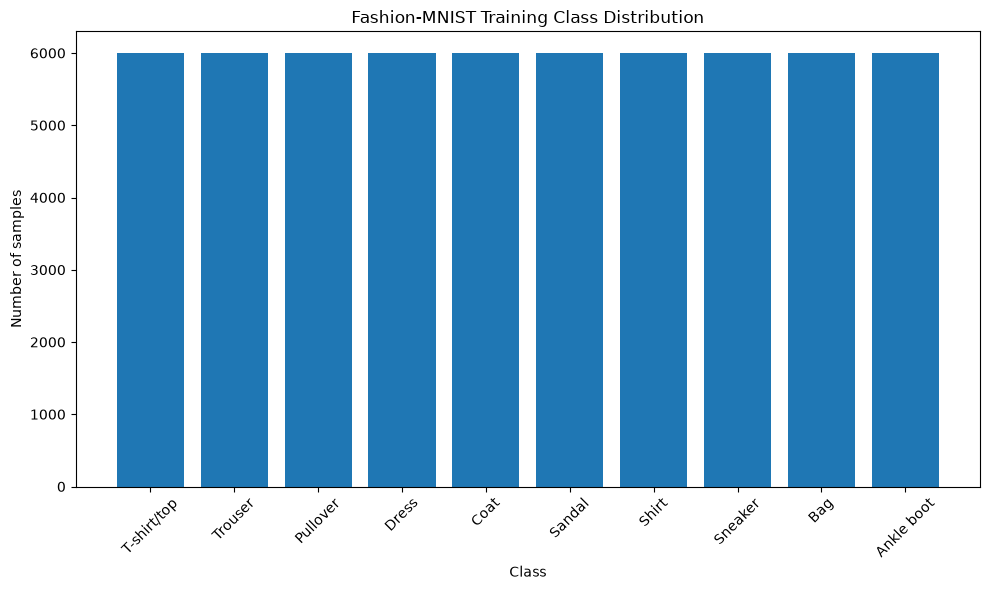
Representative Samples
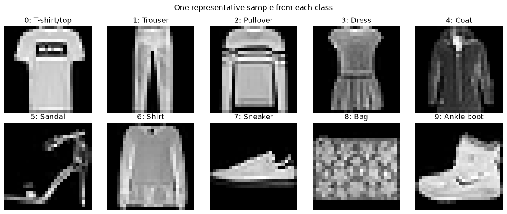
Objects are generally centered against a dark background. Some classes have clearly distinct outlines, such as trousers and bags, while visually similar classes such as shirt, T-shirt/top, pullover, and coat are harder to separate. The low resolution removes fine texture and detail, so models must rely heavily on shape, edges, and spatial structure.
3. Data Splitting
The official 60,000-image training set is divided into training and validation subsets. The official 10,000-image test set remains untouched and is used only for final evaluation. The split unit is the individual image, with seed = 42 and stratification to preserve the class distribution. Verified: train/validation overlap = 0, original samples covered = 60,000.
| Class | Train | Validation | Test |
|---|---|---|---|
| 0 · T-shirt/top | 5,400 | 600 | 1,000 |
| 1 · Trouser | 5,400 | 600 | 1,000 |
| 2 · Pullover | 5,400 | 600 | 1,000 |
| 3 · Dress | 5,400 | 600 | 1,000 |
| 4 · Coat | 5,400 | 600 | 1,000 |
| 5 · Sandal | 5,400 | 600 | 1,000 |
| 6 · Shirt | 5,400 | 600 | 1,000 |
| 7 · Sneaker | 5,400 | 600 | 1,000 |
| 8 · Bag | 5,400 | 600 | 1,000 |
| 9 · Ankle boot | 5,400 | 600 | 1,000 |
| Total | 54,000 | 6,000 | 10,000 |
| Imbalance ratio | 1.00 | 1.00 | 1.00 |
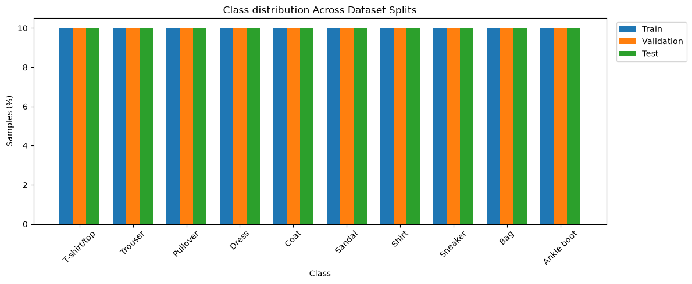
Stratification preserved the class distribution: every class represents 10% of each split. The fixed seed makes the custom split reproducible, and the absence of overlapping indices prevents direct sample leakage.
4. Preprocessing
Images are converted from unsigned 8-bit values in [0, 255] to
torch.float32 tensors in [0, 1] using
ToTensor(). Channel mean and standard deviation are computed
only from the custom training subset and then applied to the
training, validation, and test sets — validation and test data never influence
the normalization parameters, which prevents evaluation-data leakage.
Example Batch After Preprocessing
DataLoaders combine individual samples into batches; training data is shuffled
while validation and test data retain a fixed order.
Batch size 64, num_workers = 0.
| Property | Value |
|---|---|
| Image batch shape | (64, 1, 28, 28) · float32 |
| Label batch shape | (64,) · int64 |
| Pixel range | -0.810 … 2.021 |
| Batch mean / std | 0.046 / 1.004 |
| First 10 labels | [4, 6, 9, 2, 0, 2, 3, 6, 3, 5] |
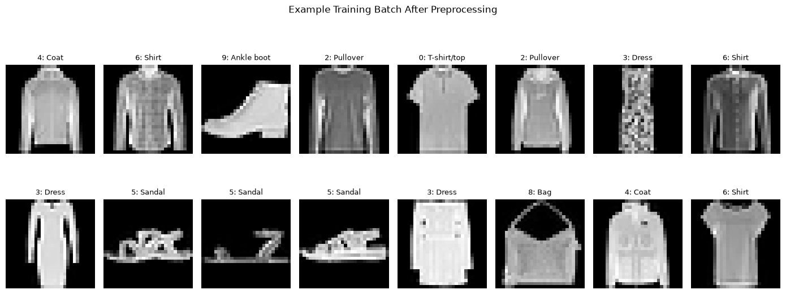
The normalized batch has a mean close to zero and a standard deviation close to one; minor differences are expected because these values describe one random batch while the statistics were computed over the full training subset. The images above were denormalized only for display — models receive the normalized tensors.
5. EDA Conclusion
- Fashion-MNIST contains 70,000 labelled 28 × 28 grayscale images (60,000 train / 10,000 test), occupying ≈ 81.85 MiB locally including Torchvision's downloaded and extracted files.
- The official training set is perfectly balanced (6,000 per class). A stratified split with seed 42 yields 54,000 train and 6,000 validation samples, both balanced and non-overlapping; the official test set is reserved for final evaluation.
- Normalization statistics (mean 0.286209, std 0.353160) come only from the training subset and are reused for all splits.
- Several upper-body categories (T-shirt/top, shirt, pullover, coat) share similar low-resolution silhouettes and are expected to be the main source of confusion, unlike trousers, bags, and footwear.
- All five model families will consume identical splits and evaluation procedures, so any performance gap is attributable to architecture and data representation rather than to the data pipeline.
Full notebook: 01_eda.html
Methodology
Pipeline Overview
Five Mandatory Models
- 1. Linear / Softmax Classifier: Flatten image to vector → linear layer → cross-entropy loss (no softmax before CrossEntropyLoss).
- 2. Multilayer Perceptron (MLP): At least one hidden layer; explain activation functions and regularization.
- 3. Convolutional Neural Network (CNN): Self-designed architecture (not just a pretrained model); explain convolution, pooling, and feature maps.
- 4. LSTM or GRU: Represent image as a sequence of rows, columns, or patches; explain timestep definition, input size, hidden representation.
- 5. Transformer: Rows/columns or patches; token embedding/projection and positional encoding; explain self-attention mechanisms.
Data Representation & Inductive Bias
An inductive bias is an assumption built into a model's architecture about which patterns are likely to be useful. All five models receive the same normalized images, but they interpret the image structure differently.
| Model Family | DataLoader Input | Internal Representation | Assumption Encoded |
|---|---|---|---|
| Linear / MLP | (B, 1, 28, 28) |
(B, 784) after nn.Flatten() |
Flattened pixels; fewest structural assumptions, discards 2-D neighbourhood |
| CNN | (B, 1, 28, 28) |
(B, 1, 28, 28) entering the first convolution |
Local spatial patterns matter; weight sharing across positions |
| GRU (current row mode) | (B, 1, 28, 28) |
(B, 28, 28): 28 timesteps with 28 features each |
Image is an ordered sequence of 28 rows, 28 features per step |
| LSTM / GRU (supported column mode) | (B, 1, 28, 28) |
(B, 28, 28) after transposing height and width |
Same, scanned column-wise; scan direction may change what is learned |
| Transformer | (B, 1, 28, 28) |
(B, 49, 128) patch embeddings; (B, 50, 128) after adding [CLS] |
49 non-overlapping 4 × 4 patches, each projected from 16 pixels to a 128-dimensional token; needs explicit positional encoding |
Here B is the current batch size. The configured maximum is 128, while
the final batch may be smaller when the dataset size is not divisible by 128.
The flattened representation makes the fewest structural assumptions. CNNs assume local spatial patterns are important. RNNs assume the image can be read as an ordered row or column sequence. Transformers treat the image as a sequence of patches and learn relationships between all patch positions. These differing inductive biases help explain why models may achieve different results even when trained on identical data splits.
Implementation Map
The pipeline above is implemented as a reproducible Python package rather than a single
notebook. Each stage has one module, and experiments/run.py is the only entry
point.
| Stage | Module | Responsibility |
|---|---|---|
| Raw data | src/data/dataset.py | Downloads and wraps torchvision.datasets.FashionMNIST |
| Split | src/data/split.py | Stratified train/validation split (sklearn.train_test_split, seed 42) and Subset construction |
| Preprocessing | src/data/transforms.py, statistics.py, pipeline.py | ToTensor() then Normalize(); mean/std computed from the training subset only, then reused for all three splits |
| Data loader | src/data/dataloader.py | Three DataLoaders; training shuffled, validation and test deterministic |
| Model | src/models/ + factory.py | Five architectures behind one create_model(name, params) registry |
| Loss & optimization | src/training/optimizer.py, train.py | CrossEntropyLoss, AdamW, one epoch of forward/backward/step |
| Training loop | src/training/trainer.py, validate.py, checkpoint.py | Per-epoch train/validate, history tracking, best-checkpoint saving |
| Evaluation | src/evaluation/ | Accuracy, Macro-F1, parameter count, timing, confusion matrix, curves, prediction examples |
| Run tracking | src/tracking/run_paths.py | Timestamped run directory per experiment, so no run overwrites another |
Model Architectures
Each model reads its hyperparameters from config/<model>.yaml, so an
architecture can be changed without touching the training code.
| Model | Input representation | Architecture as configured | Trainable params |
|---|---|---|---|
Linear / Softmaxconfig/linear.yaml |
Flatten → 784 |
One nn.Linear(784, 10) producing logits directly; softmax lives inside the loss |
7,850 |
MLPconfig/mlp.yaml |
Flatten → 784 |
784 → 256 → 128 → 10, ReLU after each hidden layer, Dropout(0.2) before the output layer |
235,146 |
CNNconfig/cnn.yaml |
[1, 28, 28] kept 2-D |
2 blocks of Conv3×3 → BatchNorm → ReLU → MaxPool2 → Dropout2d (32 then 64 channels), AdaptiveAvgPool2d(2,2), then 256 → 128 → 10 with Dropout(0.3). Self-designed, no pretrained weights |
53,098 |
GRUconfig/rnn.yaml |
28 row timesteps × 28 features ( mode: row / col / patch; cell_type: gru / lstm) |
1-layer unidirectional nn.GRU, hidden size 128; the last timestep's hidden state feeds nn.Linear(128, 10) |
61,962 (derived) |
Transformer (ViT)config/transformer.yaml |
49 patch tokens of 4 × 4 pixels | Conv2d patch projection to 128-d, learned [CLS] token + learned positional embeddings, 4 pre-LN encoder layers, 4 heads, FFN 512, GELU, dropout 0.1; the [CLS] output is classified |
803,338 (derived) |
Parameter counts for Linear, MLP, and CNN are measured values read from the M1 draft
evaluation.json files. The GRU and Transformer counts are derived from the
configured hyperparameters and will be replaced by measured counts once those two models
are trained for M2 Final.
Self-Implemented vs. Library Code
| Written by the group | Taken from libraries |
|---|---|
All five nn.Module definitions and their forward passes; the image→sequence and image→patch reshaping in the GRU model; the [CLS] / positional-embedding assembly in the ViT; the model factory |
Layer primitives from torch.nn: Linear, Conv2d, BatchNorm2d, MaxPool2d, Dropout, GRU/LSTM, TransformerEncoderLayer, TransformerEncoder |
| Train / validate epoch loops, checkpointing, run-directory tracking, the evaluation loop, inference-time measurement, results serialization, and all figure generation | torch.optim.AdamW, nn.CrossEntropyLoss, DataLoader |
| Stratified split wrapper, training-only mean/std computation, and the normalized-dataset pipeline | torchvision.datasets.FashionMNIST and transforms; sklearn.model_selection.train_test_split; sklearn.metrics.f1_score; matplotlib |
Training Setup
Shared hyperparameters live in config/config.yaml and are identical for all
five models — this is what makes the comparison fair.
Timing is measured rather than estimated. Training time wraps the whole training loop;
inference time is accumulated per batch after a warm-up forward pass, with
torch.cuda.synchronize() around each measured region when running on GPU, and
is also reported per sample.
Experiment Tracking & Reproducibility
Every training command creates a new timestamped directory instead of overwriting the previous one, so each reported number is traceable to one checkpoint and one configuration:
best_model.pt # lowest-validation-loss checkpoint
training.json # seed, data/training config, model params, training time, per-epoch history
evaluation.json # accuracy, Macro-F1, params, inference time, confusion matrix
figures/ # training_curves.png, confusion_matrix.png, prediction_examples.png
python -m experiments.run --model linear --epochs 3 --run-name m1-draft --evaluate-test
# evaluate an existing checkpoint
python -m experiments.run --model linear --evaluate-only --run-id <run-id>
Known limitation: --evaluate-only currently re-reads the YAML files on disk
rather than the configuration stored in training.json, so the model and data
configuration must be unchanged when an older checkpoint is evaluated.
Optional Extensions
LSTM vs. GRU comparison; Mamba/SSMs; CIFAR-10 experiments; robustness & interpretability evaluation; framework comparison (PyTorch vs. Keras); parameter/compute budget matching.
Experimental Setup
Mandatory Comparison Outputs
- Accuracy & Macro-F1
- Number of parameters
- Training time & Inference time
- Training and validation loss/metric curves
- Confusion matrix
- Correct and incorrect prediction examples
- Analysis of data representation & inductive bias effects (accuracy alone is not sufficient)
M1 Draft Comparison Protocol
Hypothesis. Adding nonlinear hidden layers should improve on the Linear baseline, while the CNN's spatial inductive bias should help it learn local clothing features. Because this draft uses only three epochs, the CNN may not yet realize its full advantage.
- Changed factor: model architecture — Linear, MLP, or CNN.
- Fixed factors: Fashion-MNIST split, seed 42, training-only normalization, batch size 128, three epochs, AdamW, learning rate 0.001, weight decay 0.0001, and best-validation-loss checkpoint selection.
- Evaluation: each saved best checkpoint is evaluated once on the untouched 10,000-image test set.
- Conclusion criteria: compare accuracy and Macro-F1 together with parameter count, training/inference time, learning curves, confusion matrices, and prediction examples.
All three M1 runs used the same NVIDIA CUDA environment and the same train/validation/test data preparation. This makes the comparison controlled, although timing values remain specific to the hardware and software environment used for these runs.
Results
The table reports the stored M1 Draft runs. Test metrics come from the best checkpoint selected by validation loss; parameter counts include trainable parameters. Timing values should be used as approximate efficiency indicators rather than hardware-independent benchmarks.
| Model | Final validation accuracy | Test accuracy | Macro-F1 | Trainable parameters | Training time | Inference time |
|---|---|---|---|---|---|---|
| Linear | 86.03% | 83.33% | 0.8335 | 7,850 | 45.92 s | 0.0112 s |
| MLP | 88.63% | 87.10% | 0.8712 | 235,146 | 44.71 s | 0.0272 s |
| CNN | 85.88% | 84.87% | 0.8483 | 53,098 | 49.25 s | 0.0460 s |
Training and Validation Curves
Three points are available per curve because the M1 runs used three epochs. The plots show the direction of learning, but they are too short to establish convergence or robustly diagnose overfitting.
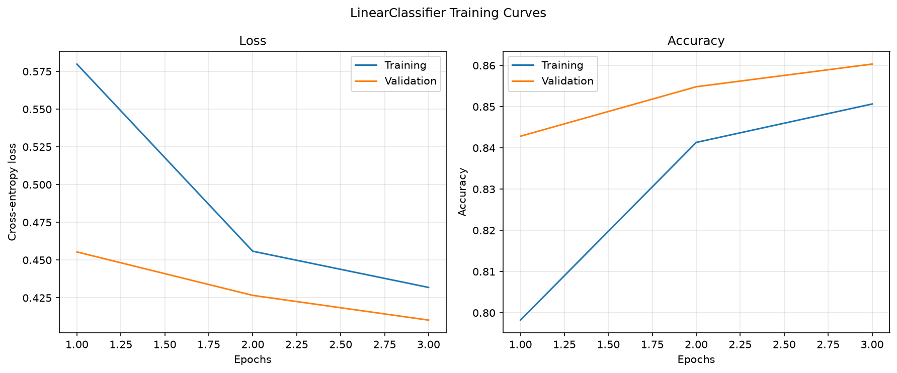
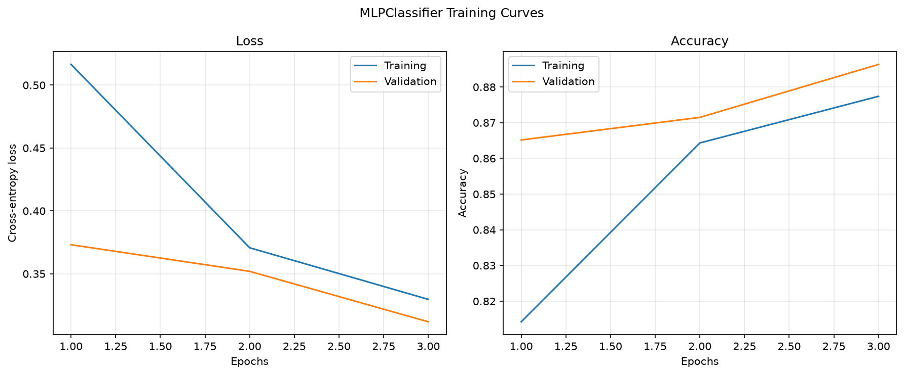
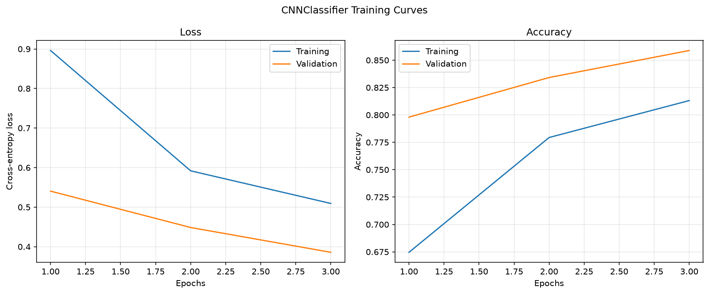
Comparison & Discussion
The MLP achieved the strongest M1 test result: 87.10% accuracy and 0.8712 Macro-F1. It exceeded the Linear baseline by 3.77 percentage points of accuracy and the CNN by 2.23 points. Its similar accuracy and Macro-F1 also indicate that its performance is not being inflated by the balanced class distribution.
Accuracy alone does not make the MLP universally best. The Linear model uses only 7,850 trainable parameters, while the MLP uses 235,146 — approximately 30 times as many. Linear also has the shortest recorded inference time. It is therefore the strongest efficiency baseline, whereas the MLP offers the best predictive performance in this short experiment.
The CNN encodes a useful spatial bias through local filters and weight sharing and uses fewer parameters than the MLP, but it did not outperform the MLP after three epochs. This result does not show that CNNs are inherently worse for image classification; it shows only that this CNN, under this short and fixed training schedule, had not produced the best result. Longer training and controlled tuning are needed to test the architectural hypothesis fairly.
Error Analysis
Errors concentrate among visually similar upper-body classes. Examples include Shirt predicted as T-shirt/top (Linear: 104, MLP: 146, CNN: 165), T-shirt/top predicted as Shirt (Linear: 150, MLP: 109, CNN: 111), Pullover predicted as Coat (Linear: 150, MLP: 112, CNN: 163), and Shirt predicted as Coat (Linear: 109, MLP: 64, CNN: 151). At 28 × 28 resolution, these classes share silhouettes and lose much of the texture and fine detail that could separate them.
The Linear classifier flattens the image and cannot explicitly model local spatial relationships. The MLP adds nonlinear feature interactions but still works on flattened pixels. The CNN preserves spatial neighborhoods and shares filters, yet its three-epoch run appears too short to fully exploit that advantage. Likely improvements include longer training, learning-rate tuning, modest data augmentation, and inspection of per-class precision and recall.
Confusion Matrices
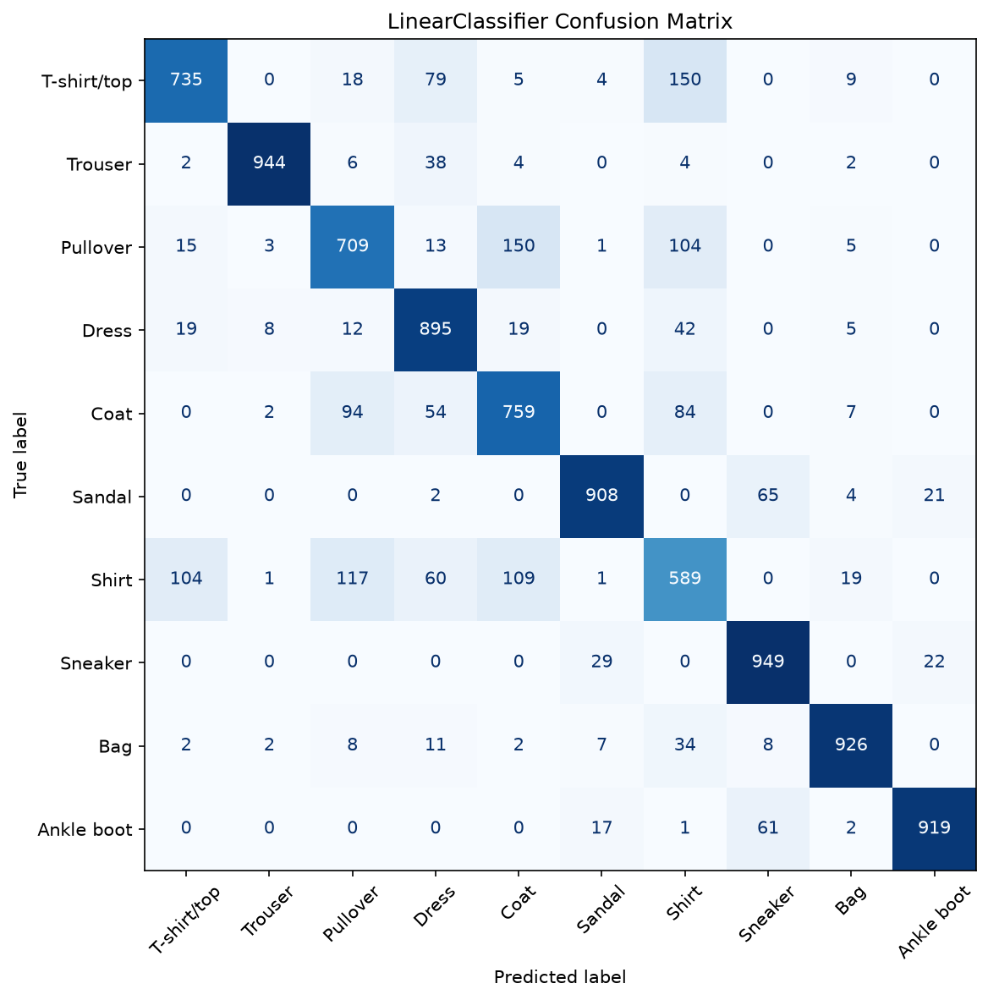
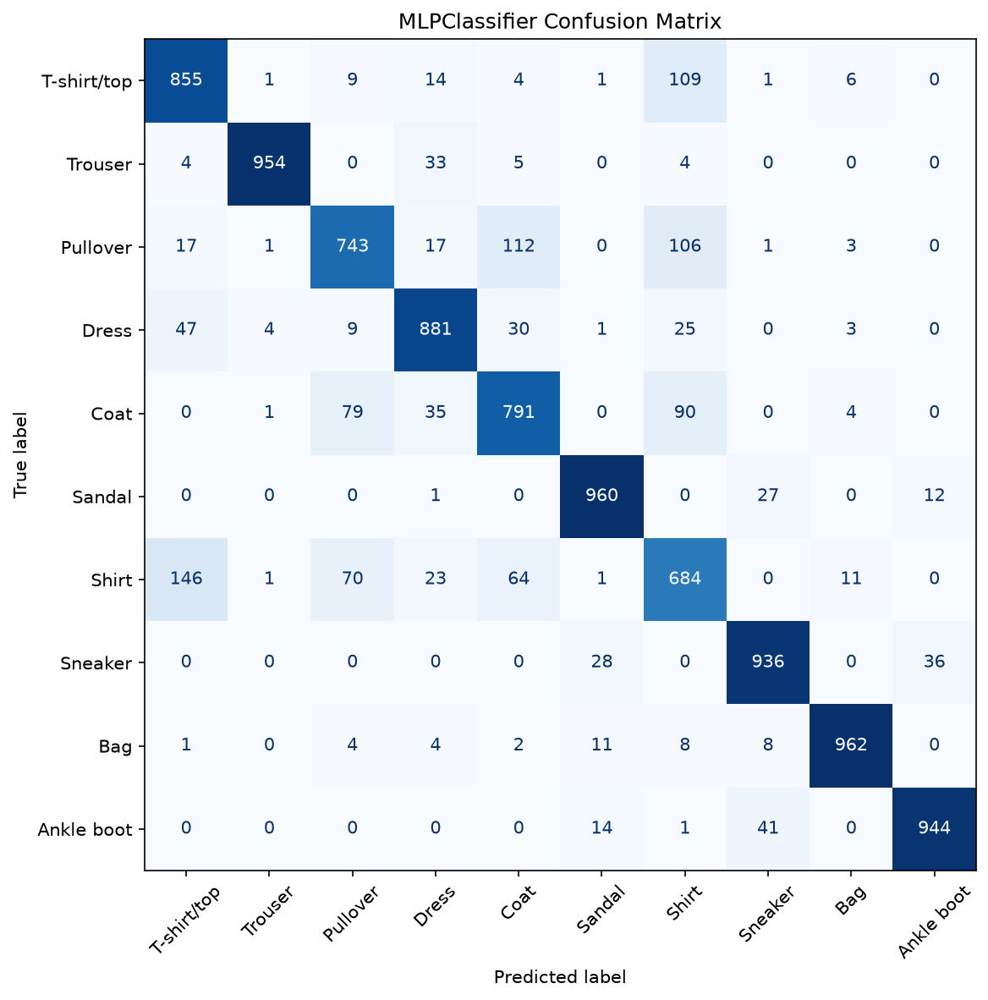
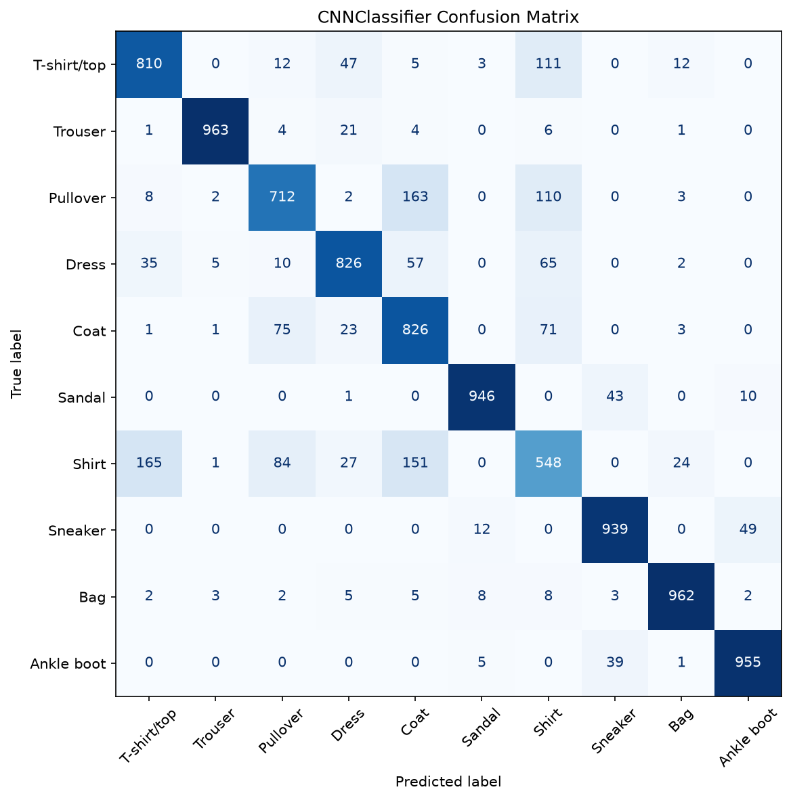
Correct and Incorrect Prediction Examples
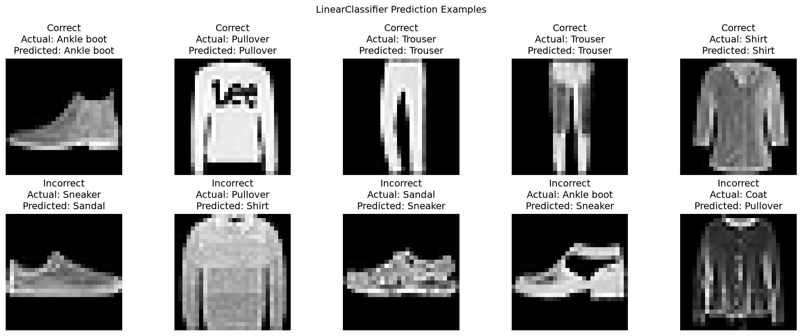
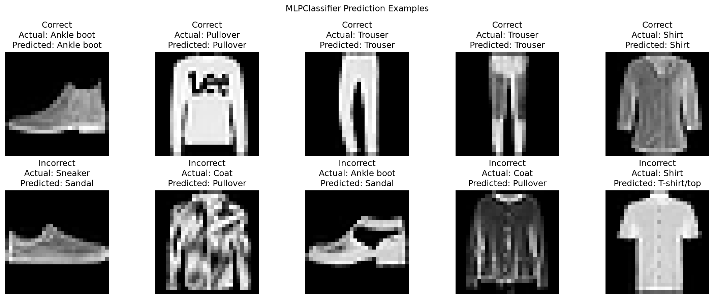
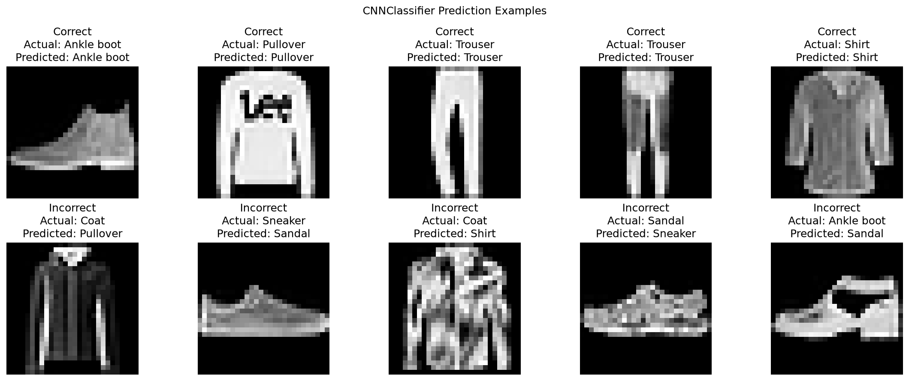
Limitations & Conclusion
This draft is limited to Fashion-MNIST, one stratified split, one random seed, one hardware environment, and three epochs without data augmentation or systematic hyperparameter search. Timing results are hardware-dependent, and the short curves do not establish convergence. The recurrent and Transformer models required for M2 are not part of this M1 comparison.
Within those limits, nonlinear modeling improved predictive performance over the Linear baseline: the MLP produced the best M1 accuracy and Macro-F1. The Linear model remained substantially smaller and faster, while the CNN provided a spatially appropriate inductive bias without yet surpassing the MLP. The M2 Final will train and compare all five architectures, repeat evaluation consistently, and expand the discussion of representation, inductive bias, and efficiency.
Deliverables & Links
AI Usage Disclosure
Assignment 1 AI Usage Disclosure
Generative AI tools were used in this assignment and are disclosed below following the mandatory fields of the course handbook. The complete log is kept in AI_USAGE.md.
| Tool | Used by | Stage & purpose | Affected sections / files | Verification |
|---|---|---|---|---|
| ChatGPT — GPT-5.6 OpenAI |
Tran Manh Thang 2353124 |
Sep 2026, website build. Drafting the landing page and the skeleton of the three assignment pages, and converting the EDA notebook output into the Dataset & EDA section of this page. | index.html, assignment1–3.html, styles.css, README.md |
Checked section-by-section against handbook §2.1–2.2; every number and figure re-checked against notebooks/01_eda.ipynb outputs; pages rendered and all links opened manually. |
| ChatGPT — GPT-5.6 OpenAI |
Tran Manh Thang 2353124 |
Sep 2026, M1 Draft. Concept explanation and code review for the Dataset/DataLoader design, stratified split, training-only normalization, and the train/validate loop. | src/data/*, src/training/train.py, validate.py, trainer.py |
Compared with the PyTorch and scikit-learn documentation; validated by the unit tests in tests/test_data/ and tests/test_training/, plus split-overlap and shape assertions in the EDA notebook. |
| ChatGPT — GPT-5.6 OpenAI |
Hoang Kim Cuong 2352145 |
Sep 2026, M1 Draft. Explanation of activation/regularization choices and review of draft implementations for the Linear, MLP, and CNN classifiers. | src/models/linear.py, mlp.py, cnn.py, config/*.yaml |
Layer shapes traced by hand and confirmed by tests/test_models/; architectures compared with the PyTorch docs; all three models trained and evaluated, results stored in m1_draft_results/. |
| Claude — Opus Anthropic |
Phan Tan Loc 2352712 |
Sep 2026, M2 preparation. Explanation of GRU/LSTM timestep definitions and of patch embedding, [CLS] token, and positional encoding in a Vision Transformer; review of draft implementations. |
src/models/rnn.py, transformer.py, config/rnn.yaml, config/transformer.yaml |
Input/output shapes asserted in tests/test_models/test_gru.py and test_transformer.py; behaviour of nn.GRU and nn.TransformerEncoderLayer checked against the PyTorch documentation before use. |
Prompts. The entries above record prompt summaries; the members keep their own chat histories and can provide the verbatim prompts on request.
No AI-generated results. No metric, curve, confusion matrix, or prediction example on this
page was produced or estimated by an AI tool. Every M1 number is read from a real run preserved under
assignment1/m1_draft_results/runs/<model>/<run-id>/.
Responsible members. Tran Manh Thang for the website, data pipeline, and training loop; Hoang Kim Cuong for the Linear, MLP, and CNN models; Phan Tan Loc for the GRU/LSTM and Transformer models. Each member verified the AI-assisted content in their own area and can explain it without assistance.